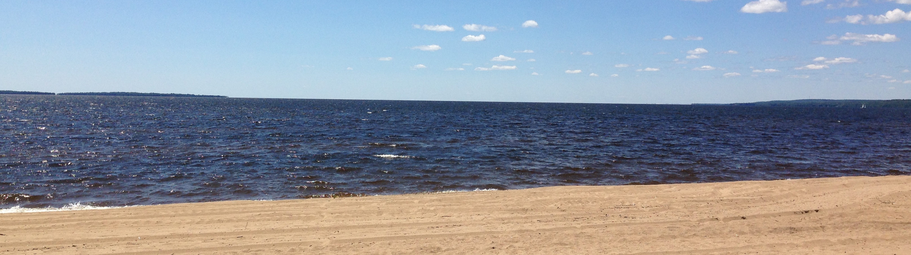
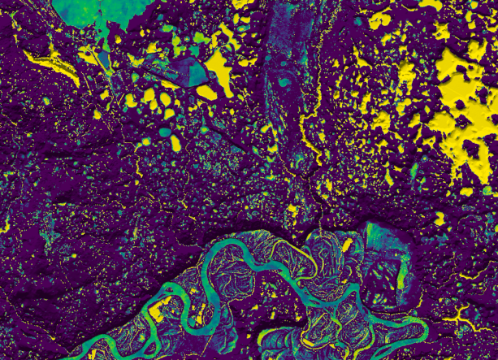

Opportunities in the GHRG
Masters opportunity researching the topographic controls on specialty crop distributions
Agricultural production is controlled by numerous environmental factors, including climate, soils, hydrology, and topography. Prof. John Lindsay, at the University of Guelph’s Department of Geography, Environment & Geomatics, is seeking an MSc student, commencing Fall 2021, who will examine topographic controls on food production. Specifically, the successful applicant will join a research project focused on characterizing the topographic factors controlling the spatial patterns of specialty crops (e.g., apples, peaches, grapes, carrots, onions, sweet peppers, cucumbers, and ginseng) in Southern Ontario. This work is part of a larger effort to model the impact of climate change scenarios on Ontario agricultural production. An understanding of the analysis of digital elevation model (DEM) data sets (i.e., geomorphometry) is highly beneficial, as is familiarity with GIS, remote sensing, and statistics. Candidates should also have experience with, or be willing to learn, basic computer programming and machine learning approaches to data analysis. The student will join the Geomorphometry and Hydrogeomatics Research Group, home to the open-source WhiteboxTools GIS. For more information about this opportunity please contact Prof. Lindsay at jlindsay@uoguelph.ca. Information about the application process can be found on the Guelph Geography webpage. The student will receive financial support following the policy in the Department of Geography, Environment and Geomatics.
Graduate Opportunities
I will aim to take on a masters student in the Fall of 2020 to carry out a geomorphometry
related research project. If you are interested in geomorphometry, LiDAR remote sensing, digital elevation
models (DEMs), and/or open-source geomatics software development please contact me.
Dr. John Lindsay
Department of Geography, Environment & Geomatics
University of Guelph
Guelph, Ontario, Canada, N1G 2W1
email: jlinsday@uoguelph.ca
Undergraduate Opportunities
Prof. Lindsay is open to advising one or two geography students (majors in EG, GEOG, ERM) during the fall and winter semesters of 2019/20 for GEOG*4690 Independent Study projects. If you are interested in GIS, LiDAR remote sensing, and geomorphometry, please come to discuss project ideas.
The GHRG also hosts a number of undergraduate student volunteers each semester. These students gain valuable experiences analyzing LiDAR and DEM data sets.
